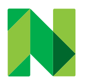

Simonne Contreras
FRONTEND SOFTWARE ENGINEER
Stripe
Software Engineer II
Jan 2025 - Current
Instrumental in the large-scale redesign of Link UX within a high-traffic payment surface, partnering cross-functionally with product and design to deliver a flexible, extensible foundation enabling rapid iteration as supported payment methods expand.
Authored the technical design and led execution of a platform-enabling feature that unlocked extensibility for partner teams, mentoring a junior engineer through production delivery.
Serve as Observability DRI, scaling synthetic monitoring coverage 10x, stabilizing flaky tests, and increasing monitoring accuracy across critical payment flows.
Trusted team resource during on-call and run operations, rapidly triaging incidents, resolving production issues, and providing high context support to cross functional partners.

Nerdwallet
Software Engineer I & II
Aug 2022 - Aug 2024
Led and engineered numerous React + GraphQL projects utilizing multi-variant A/B testing to improve form completion by ~25% over two quarters.
Developed and shipped team's first mobile feature from end-to-end, collaborating closely with the mobile and business partner teams for a full quarter to bring a React Native telemetric discount program to life and unlock promising cross-platform revenue streams.
Collaborated directly with business partners and product team to create, test, and perfect robust API integrations in the GraphQL layer, enabling projects to ship to production with confidence.

Youtube
Software Engineer Intern
Aug 2021 - Dec 2021
Coordinated and executed implementation of novel C++ and Javascript project on the YouTube TV platform, adding scalable and reliable serving and rendering logic to the codebase.
Followed detailed product design process to create thorough documentation around new feature and review its proposed implementation with senior-level engineers ahead of development.
Nerdwallet
Software Engineer Intern
Jun 2021 - Aug 2021
Migrated outdated web application's repository to GraphQL and Typescript to improve SEO and CWV performance, offering up to $1M in expanded revenue opportunities for the year ahead.
Pioneered adoption of new React internal component design system and offered feedback to better the system ahead of company-wide adoption the following quarter.
Software Engineer Intern
Jun 2020 - Sep 2020
Championed redesign of outdated internal forms using React, Scala, and Figma, elevating user experience for 100+ employees, preventing mass revenue loss, and ultimately enhancing advertiser trust in the brand.
Added response and validation logic in Scala, met with project managers frequently, drafted new UI features in Figma, and built out proposed UI features in React.
UCSD CSE Department
Undergraduate Tutor
Mar 2019 - Dec 2021
Assist students with course concepts regarding data structures and software engineering tools in 3 lower division and 2 upper division courses under instructors Gary Gillespie and Niema Moshiri.
Provide students with targeted assistance during open lab hours. This coursework consists of utilizing data structures to solve theoretical problems and creating web and mobile applications from scratch.
Prepare feedback on students' work as well as advice on best debugging practices in order to create better and more mindful programmers.